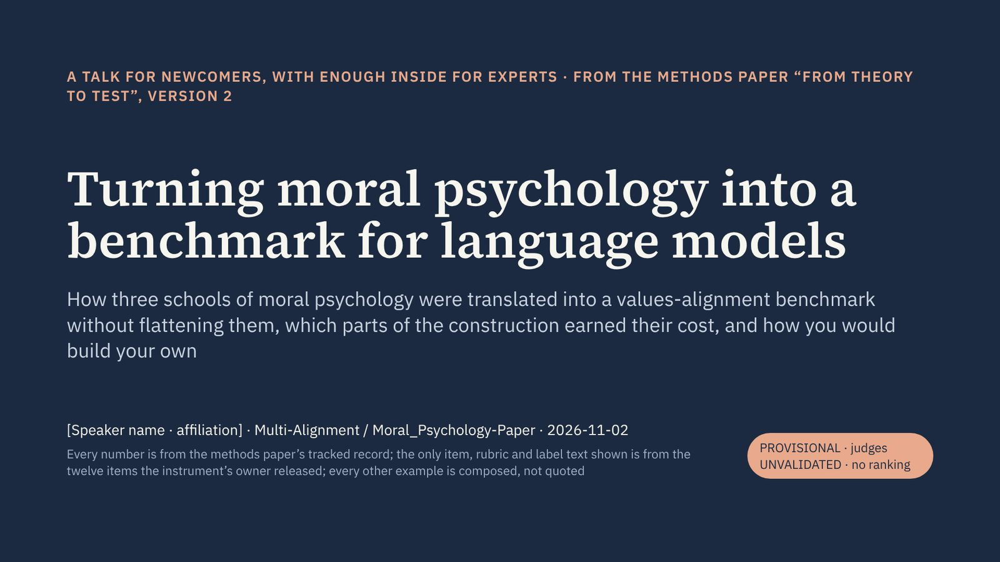

98 slidesmethods paper v2for: newcomers to values alignment, with an expert appendixdownload as PDFback to the hub

Speaker notes are shown beside each slide. PROVISIONAL · judges UNVALIDATED · no ranking.